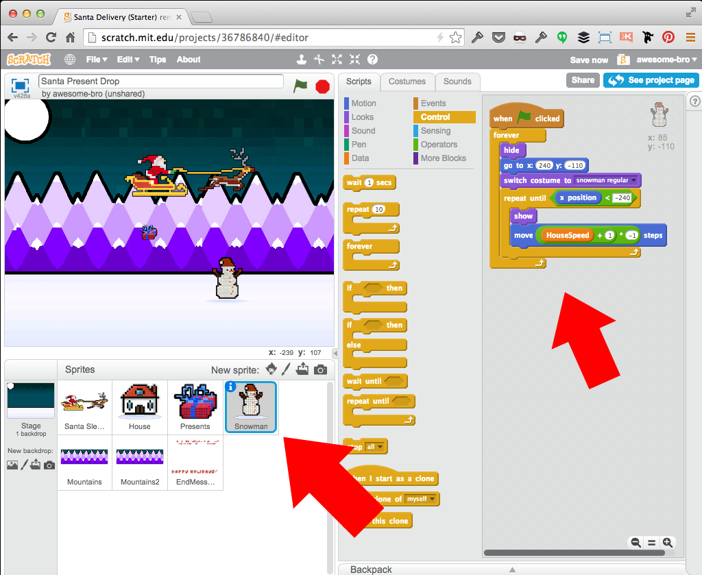

Santa Delivery Scroller Game
-
Make Santa Sleigh Sprite fly left and right with Arrow keys
-
Make the background mountains continuously scroll left
-
Make House Sprite scroll left at variable speed
-
Make Snowman Sprite scroll left at variable speed
-
Have Santa Sprite drop presents with the Space key
-
Drop Presents on houses for points and to squash Snowmen just for fun!
-
Show Ending Message and Score when game ends (25 houses pass by)
Click the "See inside" button
Notice the sections: Title, Instructions and Notes and Credits
Click the "Remix" button
This will make a copy of the project under your name
Rename the Project
It's a good practice to name your project something unique
Music Loop
Shortcut: You already have looping music code attached to your Stage!
Santa Sleigh Control with Keys
Shortcut: Rotation, Direction and Arrow keys control already coded...
We Need Houses!
Set up a few variables. Make House Sprite scroll left and loop... but it's too easy!
Variability: Random Wait Delay
Set a random number of seconds (1-4) to wait before a new house comes.
Variability: House Speed
We'll use the "modulo" (mod) math function to set house speed.
Do You Want to Move a Snowman?
We'll use a slightly different technique to move our Snowman (and loop). (Note: multiply by -1 to move the Sprite Left.)

Set up the Present Drop Position
Initiatize PresentsDelivered variable count. Make a new Present always drop from Santa's sleight with Space key. (Note: Offset x position based on sleigh direction.)
"Drop" the Present!
Make the present fall (- y movement) with a repeat loop UNTIL a condition is met (touches house roof color OR gets to bottom of screen).
Did the Present get to the House?
If the Present DID hit the target house color, play a sound and add +1 to PresentsDelivered variable count. (Always hide the Present Sprite after!)
Squash the Snowman!
Go back to the Snowman Sprite and add a few code blocks to squash him when hit with a Present! (Just for mischievous fun!)
Remember the Broadcast?
Back on the House Sprite, you should have already added a "GameOver" broadcast message after 25 houses passed.
Let's Listen for the Broadcast
The EndMessage Sprite will hide itself and the PresentsDelivered variable at Start and show both when it receives the "GameOver" broadcast.
Congratulations!
You built a scrolling game! Now, here are a few Challenges:
-
Make new costumes to animate Santa and Rudolf as they fly
-
Make new costumes for different types of houses
-
Create a variable for number of snowmen squashed and display
-
Come up with a better way to display score and decide when game will end
-
Look for "1 Sprite 1 Script" (1S1S) Costume / Stamp methods for background scrolling
-
Add a "Start Over" button
If you got stuck anywhere, see the completed project with comments here: http://scratch.mit.edu/projects/36762558/!
/